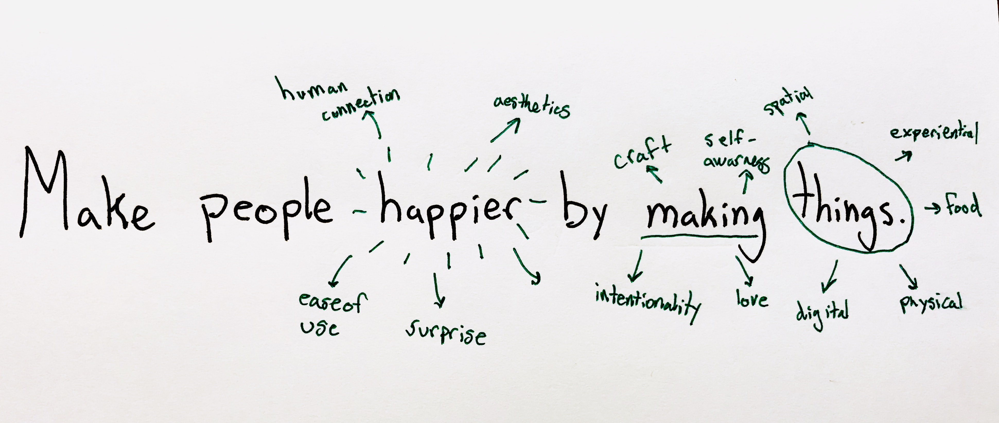

Take a breath...I have a lot of words for you
I'm a designer, tinkerer, and aspiring chef based in Stanford, CA. I was raised in a town outside Washington DC and grew up going to the nation's greatest (most free) museums.I believe in vibrant communities and am a sucker for old fashioned malt milkshakes.
I recently graduated from Stanford and excited for what the future holds. I spent two amazing summers working with the design nerds at IDEO CoLab, then worked on a storytelling platform for the elderly at Facebook. In between I worked at a YC-backed sous vide hardware company called Cinder.
In my free time I make minimalist wallets and mess around with Arduinos. In 2015, I created and curated a TEDx in my hometown that is still running today. Experimental cooking is pretty cool.
I'm humbled to have worked with amazing thinkers, professors, students, and mentors including but not limited to Barbara Karanian, Ge Wang, Eric Norman, William Ngan, Nadine Levin, Gavin McDermott, Joel Kwartler, Annie Brantigan, Daniel Chan, Ashwin Agarwal, Justin McKissik, and many other amazing thinkers.
Sketch & Figma
Adobe After Effects, Illustrator and Photoshop
HTML & CSS
JS - Vue, React, Node
Unity & D3
Firebase
Metal Lathe and Mill
Laser Cutting & 3D Printing
Foam Core
Arduino
Motors & Gears
What I believe in and ponder:
- I believe in the power of rituals to change behaviors and cultures
- I respect transparent communication, self-awareness, and constant personal growth
- I think designs are most sustainable when you assure but-in from every involved party
- I think cooking is not only a creative art but a much more accessible activity than young people think.
- I think real design stems from intentional insights about people rather than "artistic inspiration"
- I think some of the most moving/beautiful products are born out of artistic inspiration
- Reality - Expectation = Happiness
- Design is a massive set of tools and muscles to use dynamically based on a variety of problems we can solve
- We should invest in enabling creativity in our youngest generation
My current life motto
*super specific, I know
